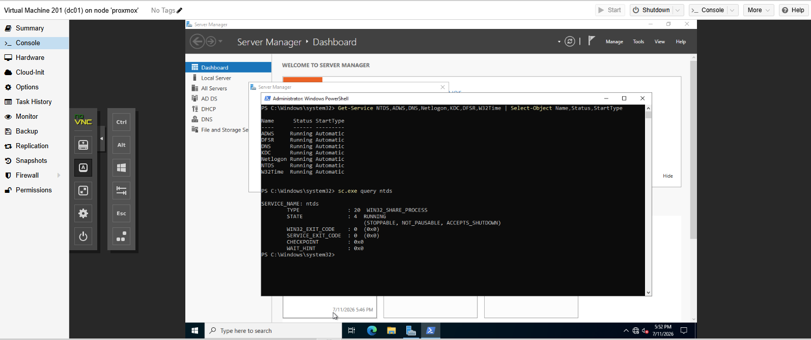
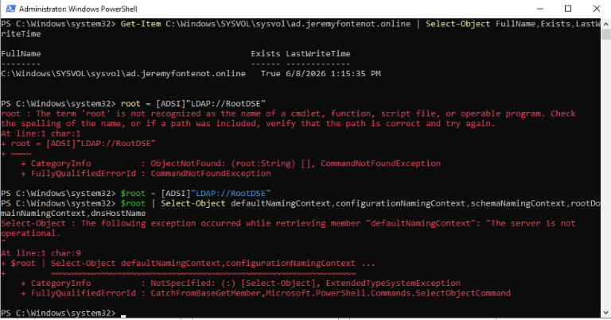
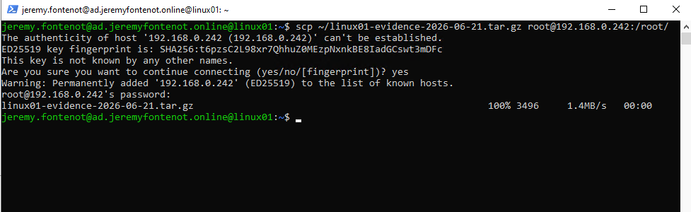
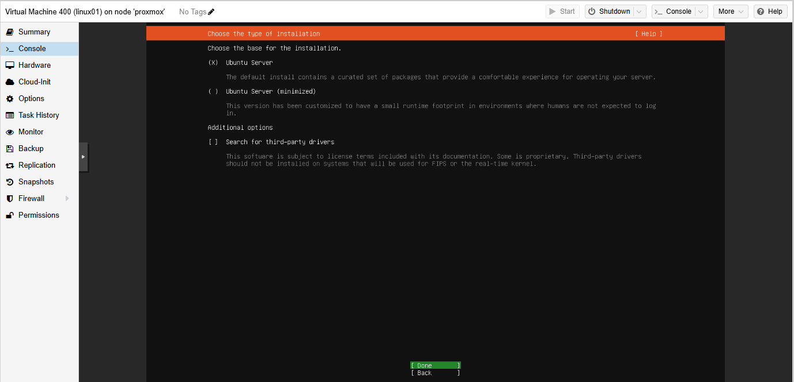
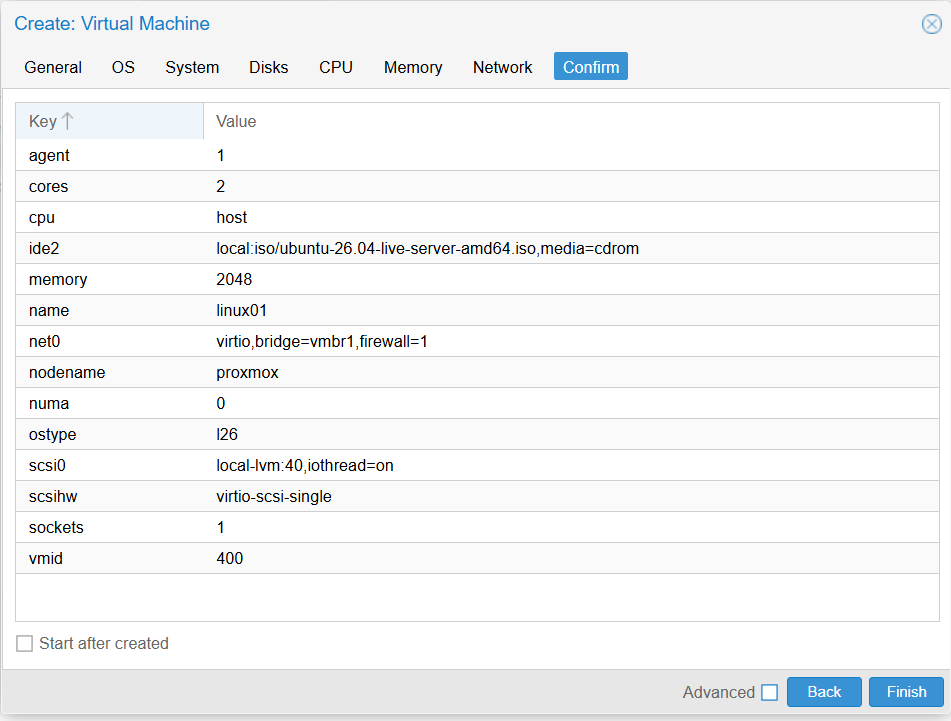

Platform
Dell PowerEdge R710 running Proxmox VE 9.2.3 with four primary virtual machines.
Home Lab · Infrastructure Operations
I built this lab to break things safely before I break them at work. It runs Windows Server and Active Directory, a Linux domain member, pfSense networking, and Proxmox virtualization — close enough to a real environment that the mistakes, and the fixes, actually transfer.
Evidence Status
Status labels describe what the available records support without extending the claim beyond the evidence.
Current evidence directly confirms the stated system or property.
A behavior was exercised and recorded within a defined scope.
Configuration is present, but behavior is not promoted beyond the record.
Known gaps, historical values, timeouts, and unsupported conclusions remain visible.
Current Supported State
Linux01 currently runs on VLAN 30 at 10.10.30.20/24, with backups stored on backup-hdd. Earlier 10.10.20.x records are kept for history, not treated as current.
Dell PowerEdge R710 running Proxmox VE 9.2.3 with four primary virtual machines.
pfSense routing, lab LAN services, VLAN 30 placement for Linux01, and a documented OpenVPN management path.
DC01 provides AD DS, DNS, DHCP, Group Policy, Global Catalog, and FSMO roles; WS01 is domain joined.
Ubuntu Linux01 with current addressing, realmd/SSSD integration indicators, and an isolated SSSD remediation record.
Weekly snapshot configuration for VMs 100, 200, 300, and 400 with zstd compression and keep-last=4 retention.
A four-system isolated restore cycle, bounded guest checks, manifests, SHA-256 records, screenshots, and conservative result classifications.
System Evidence
Each card leads with the supported state, then links to the strongest available artifact.
Direct inventory supports Proxmox VE 9.2.3, VM IDs 100/200/300/400, running state, compute allocation, storage, bridge placement, guest-agent state, and Linux01 VLAN tag 30 where captured.
Direct evidence supports Windows Server 2022, AD DS, DNS, DHCP, Group Policy Management, domain details, Global Catalog status, FSMO ownership, and DC01 addressing.
Direct evidence supports VM 300 association, Windows 10 Pro build 19045, domain membership, secure channel, and captured network state.
Direct evidence supports Ubuntu 26.04 LTS, kernel, VLAN 30, current IP, gateway, DNS, current-versus-historical address boundaries, domain-integration indicators, and Linux01-only SSSD remediation.
The weekly snapshot job targets VMs 100, 200, 300, and 400 with zstd compression, keep-last=4 retention, and backup-hdd storage.
Linux01 and pfSense achieved scoped PASS results. WS01 and DC01 remained INCONCLUSIVE overall. All four selected archives restored to temporary VMs with preboot network isolation, bounded local checks where authorized, controlled cleanup, and production protection.
Isolated Backup Restore Validation
Restore testing matters because a configured backup job does not prove that an archive can be recovered. I used temporary Proxmox VMs, verified link_down=1 before first boot, performed only authorized local checks, shut each guest down cleanly, removed its temporary resources, and confirmed that production VMs 100, 200, 300, and 400 remained protected.
| System | Production VM | Temporary VM | Restore | Isolation | Boot | Local validation | Cleanup | Overall result |
|---|---|---|---|---|---|---|---|---|
| Linux01 | 400 | 401 | PASS | PASS | PASS | PASS within scope | PASS | PASS |
| WS01 | 300 | 301 | PASS | PASS | PASS to sign-in | NOT TESTED | PASS | INCONCLUSIVE |
| DC01 | 200 | 201 | PASS | PASS | PASS | Selected checks PASS; LDAP checks INCONCLUSIVE | PASS | INCONCLUSIVE |
| pfSense | 100 | 101 | PASS | PASS on both NICs | PASS | PASS within scope | PASS | Narrow PASS |
PASS indicates only the scoped isolated-restore objectives that were directly validated. It does not indicate complete production recovery or full disaster recovery.
The VM restored, remained isolated, booted to the Windows sign-in screen, shut down cleanly, and was removed without affecting production. In-guest validation was not completed because an authorized local Windows account was unavailable.
The domain controller restored and booted while isolated. Elevated validation confirmed NTDS, selected core services, SYSVOL, and NETLOGON. Local LDAP/RootDSE, localhost AD cmdlets, and LDAP-dependent dcdiag remained inconclusive while strict NIC isolation remained enforced.
The test did not exercise live WAN/LAN connectivity, routing, NAT, firewall policy, DHCP clients, DNS forwarding, VPN tunnels, identity integration, certificate workflows, application connectivity, or business-service recovery.
RTO: NOT MEASURED. RPO: NOT MEASURED. Full disaster recovery: NOT PROVEN. Observed archive timestamps and temporary restore task times were not promoted into production recovery objectives.
Validation Tooling
Repository and framework checks turn repeatable technical work into reviewable records while retaining negative results and boundaries.
Required paths, validation entry points, PowerShell parser checks, Git whitespace checks, and potential-secret pattern checks passed.
Configuration loading, required result properties, evidence paths, JSON/CSV/Markdown generation, target omission handling, and timeout handling passed. One negative connectivity case was expected.
Five facts matched. Four evidence gaps remained: restore-test status, OpenVPN network, direct RDP status, and centralized logging. These are documented gaps, not infrastructure failures.
Screenshot Evidence
Each image opens at full resolution and includes a concise statement of what it supports.







Reviewer Artifacts
Evidence Boundary
The evidence does not claim enterprise scale, production availability or failover, RTO/RPO, full disaster recovery, full firewall assurance, broad security assurance, SLA performance, or employer-system administration. The July cycle proves four selected archives could be exercised only within their documented isolated objectives; it does not prove complete AD, workstation, firewall, network, application, or business-service recovery.
{kind=link}
{kind=link}
{kind=link}
{kind=link}
{kind=link}